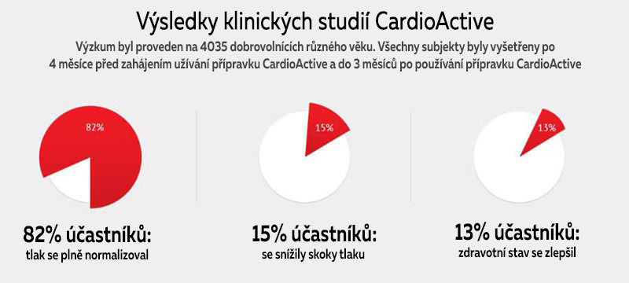
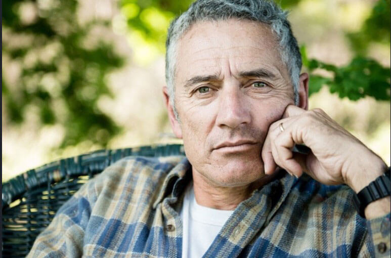

Experiment, který mi změnil život. Rozloučil jsem se s hypertenzí a jsem vděčný organizátorům výzkumu
Před prodejem musí každý preparát nutně projít klinickými testy. Ale jen málo lidí si uvědomuje, jak probíhají a jakými důvody jsou jejich účastníci vedeni. Všechny podrobnosti nám řekl, 52 letý Jan Novák, který se v průběhu 10 měsíců podílel na studii nového přípravku od hypertenze.
Upozornění! Na konci článku najdete informace o novém revolučním preparátu, který účinně bojuje proti hypertenzi.
— Dobré ráno, pane Novák! Řekněte nám, proč jste souhlasil s účastí na výzkumu? Proč jste si vybral preparát proti hypertenzi?
— Dobré ráno! Odpověď je jednoduchá-souhlasil jsem s výzkumem preparátu, protože mám vysoký krevní tlak. A zjistil jsem to náhodou. Chtěl jsem běžet půlmaraton (21 km) a musel jsem získat povolení od terapeuta. Samozřejmě, že mi nebylo dovoleno běžet. Také mi řekl, že mám vysoký krevní tlák již delší dobu. A já jsem si celou dobu myslel, že bolest hlavy a neustálá únava souvisí s mou tvrdou prací!
Tehdy mi bylo 46 let. Před zahájením výzkumu jsem každé ráno po dobu 8 let užíval různé druhy léků. Můj krevní tlak se pohyboval od 140/80 do 170/100 mm Hg.
Mnozí si tak žijí a nestěžují si, ale já jsem se cítil invalidou .Mně, člověku se zdravými klouby, bylo zakázáno běhat! Navíc jsem byl deprimován myšlenkou huntovat své tělo léky proti hypertenzi po zbytek mého života. Navíc mi ani nepomahali.
— Jak jste pochopil, že nepomáhají?
— Často mě bolela zádní čast hlavy a když jsem se na něco dlouhodobé díval, citil jsem ostrou bolest v očích. A jednoho dne jsem pocítil náhlou silnou bolest v srdci, nevolnost a závratě. Byla to hypertenzní krize..
Přijel jsem do nemocnice se systolickým tlakem 180, oni mě zachránili. Právě lékař, který mě vrátil k životu, navrhl, abych se podílel na výzkumu preparátu proti vysokému krevnímu tlaku.
— Souhlasil jste hned? Nakolik je tato procedura bezpečná?
— Samozřejmě jsem měl zpočátku pochybnosti. Ale podrobně mi vysvětlili všechna rizika a fáze procedury. Řekli, že předtím, než přešli k výzkumu na lidech, byl výrobek testován v laboratoři na lidských a myších buněčných kulturách. Oni pověděly že je také v první radě zajímá úspěch výzkumu. Kromě toho každý účastník, který souhlasil a podepsal formulář, obdrží pojištění, které pokryje jakoukoli způsobenou škodu. Ale nejdůležitější věc-to, co vyvolalo mou důvěru a přesvědčilo k účasti - je 100% přírodní složení preparátu.
— Souhlasil jste a hned začal výzkum?
— Výzkum začal po čtyřech měsících. Hodně času ušlo na různé testy analýzy, atd. udělali mi elektrokardiogramu, několikrát mi měřili krevní tlak, odebrali vzorky krve a moči, změřili výšku a váhu. Během experimentu zcela kontrolovali stav mého těla a můj zdravotní stav celkově. O dva týdny později mi a tisícům dalších dobrovolníků zavolali a řekli, že jsme ve třetí fázi výzkumu.
— Co znamená «třetí fáze»?
— V první fázi studie na zdravých dobrovolnících určují, jak je preparát snášen lidmi. Ve druhém-dávka je kontrolována u pacientů. Ve třetí fázi-účinnost preparátu je kontrolována u stovek pacientů ve srovnání s placebem nebo analogy.
— Takže jste nevěděl, co vám dávají?
— Ano, to je klíčová myšlenka výzkumu. Naštěstí jsem se ocitl mezi těmi, kteří tento preparát užívali.
— Jak probíhal výzkum?
— Bylo nutné užívat 15-20 kapek dvakrát denně po dobu 1,5 měsíců. První měsíc jsme byli hospitalizováni jeden nebo dva dny každý týden, pak - když výzkum skončil. Po zbytek času jsme museli přesně dodržovat všechny předpisy lékařů: omezit konzumaci tučných potravin, nepít alkohol, nekouřit a tak dále. Kromě toho bylo nutné měřit tlak každý den ráno a večer a také zapisovat všechny příznaky ve speciální příloze.
V ty dny, kdy jsme byli v nemocnici, jsme byli pravidelně vyšetřováni, měřili náš krevní tlak a prováděli krevní a močové testy. Někdy nás ráno nekrmili a nechali nás hladovat až do oběda - bylo to těžké. V 7 hodin ráno, 30 minut před snídaní, byl první příjem kapek a po 15 minutách prováděli krevní testy a měřili tlak.

— Pomohly kapky? Jak se změnil váš stav?
— Navzdory mým obavám, jsem byl v pořádku. Po druhém týdnu už jsem neměl bolesti v zadní části krku, a tlak nepřesahoval 140. Po měsíci-nepohodlí v srdci již nebylo, zrak se zlepšil a napětí v očích zmizelo. Dušnost po fyzické námaze také zmizela. A po 1,5 měsíci se krevní tlak stabilizoval na 125/75, začal jsem dobře spát a cítil jsem se plný energie.
Bál jsem se, že po ukončení kúry potíže s vysokým tlakem se vrátí. Ale uplynuly více než 3 měsíce a cítím se zdravý!!
— Znáte název produktu, který jste testovali?
— Ano, to byly kapky založené na 100% přírodních rostlinných extraktech.
— Platili vám za účast ve studiu?
— Ne, nic mi neplatili. Peníze dostali jen účastníci první etapy. Firma ale pokryla veškeré náklady na dopravu, stravu, vyšetření a pobyt v klinice. Ale v žádném případě si nestěžuji! Dostal jsem něco, co nelze koupit za žádné peníze-zdraví!
KOMENTÁŘ ODBORNÍKA
Josef Výlek,
kardiolog, jeden z organizátorů III fáze klinických studií
Vysoký krevní tlak je závažné onemocnění, které postihuje kardiovaskulární systém, mozek a ledviny a zvyšuje riziko vzniku infarkt myokardu, mrtvice a selhání ledvin. Obvykle je hypertenze téměř asymptomatická a diagnostikována, když se komplikace začínají objevovat v jiných orgánech.
Zpravidla pacienti užívají dva nebo vice drůhu léku na hypertenzi po celý život. Tato terapie je často doprovázena vedlejšími účinky a dále zhoršuje zdravotní stav pacienta.
Kapky byly vytvořeny ve formě monoremediace, která nevyžaduje příjem dalších produktů, protože má všechny potřebné vlastnosti:
— zlepšuje pružnost cév;
— má kumulativní účinek;
— snižuje hladinu škodlivého cholesterolu a zabraňuje snížení hladiny dobrého cholesterolu;
— má vazodilatační účinek;
— normalizuje práci srdce;
— odstraňuje přebytečnou sůl a vodu z těla.
Kapky mají unikátní rostlinné složení-výtažky z hlohu, srdečníku obecného, chmele, přesličky, třezalky tečkované a květy lípy. Užitečné flavonoidy mají příznivý účinek na tkáně a buňky. Během dlouhého výzkumu jsme zjistili, že složky kapek mají komplexní léčebný účinek na cévy a kapiláry: zlepšuje činnost srdce a nervového systému a také zvyšuje svalový tonus.
Úžívání kapek kúrou posiluje stěny cév, stabilizuje tlak, eliminuje nervozitu, dušnost, bolesti hlavy a šum v uších. Nálada se zlepšuje a spánek se normalizuje. Důležité: kúrou nejen normalizuje krevní tlak, ale také zabraňuje vzniku kardiovaskulárních onemocnění: infarkt, mrtvice atd.
Jan Novák byl jedním ze 4035 dobrovolníků ve věku od 19 do 70 let, kterých jsme vybrali pro klinickou studii fáze III . Tato skupina testovala naše kapky. Tam byla také skupina, která testovala analogy. Všichni účastníci zjistili, do jaké skupiny patří, až po ukončení výzkumu.
Po dobu 10 měsíců jsme pečlivě sledovali jejich zdravotní stav, prováděli testy, měřili tlak v různou dobu a za různých okolností: seděli na židli, stáli, před a po tréninku.
V důsledku studie jsme potvrdili účinnost přípravku a také jsme vyloučili možnost potíží po okončení kúry. Po 1 měsíci užívání produktu 70% účastníků zlepšilo hodnotu tlaku, která klesla na 135/80 mm Hg. A po 2 týdnech již 100% subjektů dosáhlo normálního tlaku. Průměrný krevní tlak byl 125/75 mm Hg. Po dokončení kúry , délkou měsíce a půl se tlak zcela stabilizoval a při denních měřeních byl vždy normální jako u zdravého člověka. Nebyly zjištěny žádné vedlejší účinky.
Slovo redaktorům:
Hypertenze je vážné onemocnění, které neumožňuje člověku žít plnohodnotný život a každým rokem ho přibližuje k smrti. Pokud máte problémy s vysokým krevním tlakem, neztrácejte čas a peníze na zbytečné preparáty. Používejté kapky , jejichž účinnost je již klinicky potvrzena.

UPOZORNĚNÍ: Chcete získat slevu 50% na kapky ? K tomu je potřeba: do (včetně) umístit objednávku na oficiálních stránkách Chcete-li přejít na web, klikněte na tlačítko níže. Počet balení v akci je omezené!
VÝSLEDKY NAŠICH ČTENÁŘŮ
«Díky kapkám mám nyní bohatý a aktivní život! Po ukončení kúry se tlak normalizoval a už mě netrápí.»
Kamil Kovář
«Kapky rychle normalizují tlak! Pro mě je to obrovská úleva. Dříve jsem nemohla normálně pracovat a ani odpočívat. Po jedné kúře těchto kapek se konečně cítím jako zdravý člověk!»
Jana Vágnerová
«Díky těmto kapkám jsem se konečně rozloučil se skoky tlaku. Neměl jsem je už šest měsíců. mi objednala manželka a já jsem jí za to velmi vděčný. To změnilo náš život k lepšímu, cítím se opět zdravý a sebevědomý. Díky!»
Vladislav Janský
Daniel Horák, 53 let
Také jsem se podílel na tomto výzkumu. Ahoj Honzo Nováku ! :) Mám teď taky všechno v pořádku. Slabost, bolest hlavy, zvýšené pocení zmizely, stal jsem se klidnější. Mohu doporučit ostatním hypertenzním pacientům, protože sám testoval tento preparát
Jan Novák, 52 let
Danieli Horáku, jsem šťastný, že jsi v pořádku! I já jsem v pohodě! Konečně jsem běžel maraton
Marie Dostalová, 34 let
Moje máma má hypertenzi, objednala jsem jí tento preparát. Doufám, že opravdu pomůže.
Ilona Veselá, 41 let
Super zajímavé! Vždycky jsem se chtěla zúčastnit klinických testů.
Jaroslav Čížek, 45 let
je nejlepší prepapát pro stabilizaci krevního tlaku na trhu. Můj dědeček a otec se s jeho pomocí konečně uzdravili!
Jiří Mátl, 56 let
Škoda, že jsem o tom výzkumu nic neslyšel ... ale teď se budu podílet na mém osobním domácím experimentu :) už jsem si objednal tyto kapky
Jiřina Veselá, 62 let
Bylo mi řečeno, že mám zvýšený tlak po vyšetření oftalmologem. Ukázalo se, že to způsobilo zhoršení zraku ... Nejprve jsem užívala dva preparáty proti hypertenzi, pak tři, ale necítila jsem žádné zlepšení. Piju jen dva týdny a už je mi podstatně lépe: spím klidně a bolesti hlavy jsou pryč.
Marek Kolár,59 let
Hurá! Objednal jsem si tyto kapky se slevou! Čekám na doručení za 2 dny
Magda Hlinková, 48 let
Můj otec zemřel na infarkt, mám taky problémy s tlakem, bojím se. Děkuji výrobci , že našli nový způsob, jak nás zachránit!
Lenka Fámová, 37 let
Zajímavá informace.Doporučím tento preparát svým kolegům, kteří často trpí kvůli vysokému tlaku
Veronika Čáková, 53 let
Už jsem slyšela od mnoha lékařů o užitečných vlastnostech chmele, třezalky tečkované a hlohu pro pacienty s hypertenzí. Objednám si tento produkt, dokud platí Speciální nabídka.
Martin Kozák, 57 let
Složení kapek je opravdu dobré. Hlavní věc-zcela přírodní a žádné vedlejší účinky. To je velmi důležité při každé léčbě!
Simona Klárová, 65 let
Tyto kapky mají kumulativní účinek, je velmi důležité absolvovat plnou kúru, i když se již cítíte zdravě
Zuzana Sýkorová, 54.
Tak to je přesně ten výrobek , který jsem tak dlouho hledala! Díky pohodlnému dávkovači jsou kapky snadno použitelné a mají příjemnou chuť. Ale nejvíc se mi líbí jejich efekt! Rozloučila jsem se s tonometrem a cítím se o 15 let mladší. Zkuste si sami ověřit jejich účinnost. Všem přeji zdraví!
© Copyright. Všechna práva jsou vyhrazena